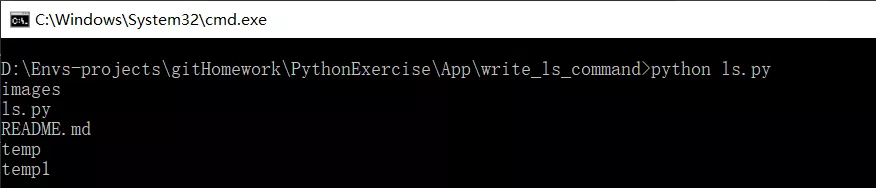
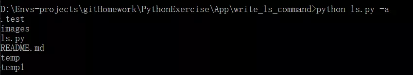
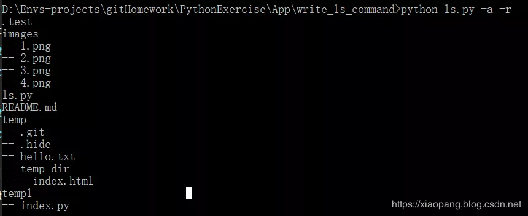
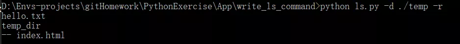

看过这篇《2000字谏言，给那些想学Python的人，建议收藏后细看！》的读者应该都对一个命令有点印象吧？没错，就是 linux 中经常会用到的 ls 命令。
文章中我就提到如何提升自己的 python 能力呢？直接找项目写，但是作为零基础 / 小白 / 入门 的你来说做一个博客还要学 web 框架、html、css、js，又成为了阻碍你写实际项目的阻碍。
所以我就推荐了这个命令：ls。写一个 ls 非常简单，你只需要会一点 linux 的基础知识，知道 ls 能做什么就好了。
那今天就给大家码了一个哪哪能用的 ls.py ，没错，windows 也可以哦～
argparse是python的标准库，他可以使我们很友好的编写命令行界面，并且可以自动生成帮助文档和使用消息，还能在参数无效的时候发出错误。
%(prog)s引用应用的名字，默认的应用名字为文件名。这里我们就简单的指定三个参数.
首先我们使用 ArgumentParser 类来指定参数。
import os
import argparse
parser = argparse.ArgumentParser(prog='ls', description='显示文件夹下的文件')
# 指定参数
parser.add_argument('-a', '--all', const=True, nargs='?', help='是否显示隐藏文件')
parser.add_argument('-d', '--directory', help='指定显示的目录，如果不指定，默认为当前目录')
parser.add_argument('-r', '--recursion', const=True, nargs='?', help='是否递归显示')
# 解析参数
args = parser.parse_args()
# 拿到directory参数，如果没有传这个参数，为None
directory = args.directory
# 如果directory有值
if directory:
# 如果指定目录不存在，抛出异常
if not os.path.exists(directory):
raise ValueError(f'{directory} does`t exist')
# 如果directory不是一个目录，抛出异常
if not os.path.isdir(directory):
raise ValueError(f'{directory} is not a directory')
# 如果directory为None，给directory赋值
else:
directory = '.'我们规定好参数之后，接下来就是具体ls的实现。我们封装一个 LsCommand 类
class LsCommand():
def __init__(self, show_all=False, directory='.', recursion=False):
'''
:param show_all: 是否显示隐藏文件
:param directory: 指定的文件目录
:param recursion: 是否递归显示目录下的文件
'''
self.show_all = show_all
self.recursion = recursion
self.directory = os.path.abspath(directory)
def handle_dir(self, directory, grade=1, placeholder='--'):
'''
处理目录
:param directory: 文件目录
:param grade: 目录层级
:param placeholder: 子目录文件前面的占位符
:return:
'''
# 判断是否为文件夹
# grade是否增加过了
# os.listdir: 列出当前文件夹下面的所有文件和文件夹
# 遍历目录下的文件，文件夹
pass
def show_file_or_dir(self, file, prefix=''):
# 如果不显示隐藏文件
# 打印前缀和文件名
pass
def run(self):
'''
运行ls命令
:return:
'''
# os.listdir(dir) 得到dir目录下所有文件，文件夹
# 遍历self.directory目录先所有文件，文件夹
passls这个类我们也封装好了，接下来我们将得到的参数传入 LsCommand 类中，然后运行，就可以愉快的得出结果。
ls = LsCommand(bool(args.all), directory, bool(args.recursion))
ls.run()python ls.py

python ls.py -a

python ls.py -a -r

python ls.py -d ./temp

关注公众号「Python专栏」，后台回复「机器学习电子书」免费获取100本机器学习电子书